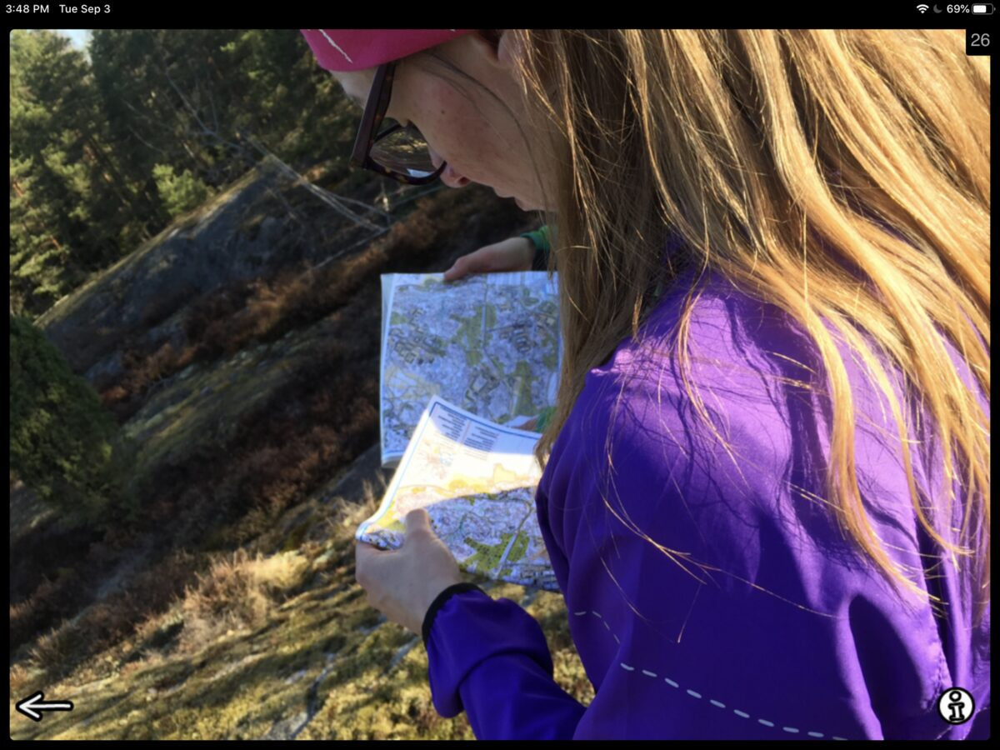
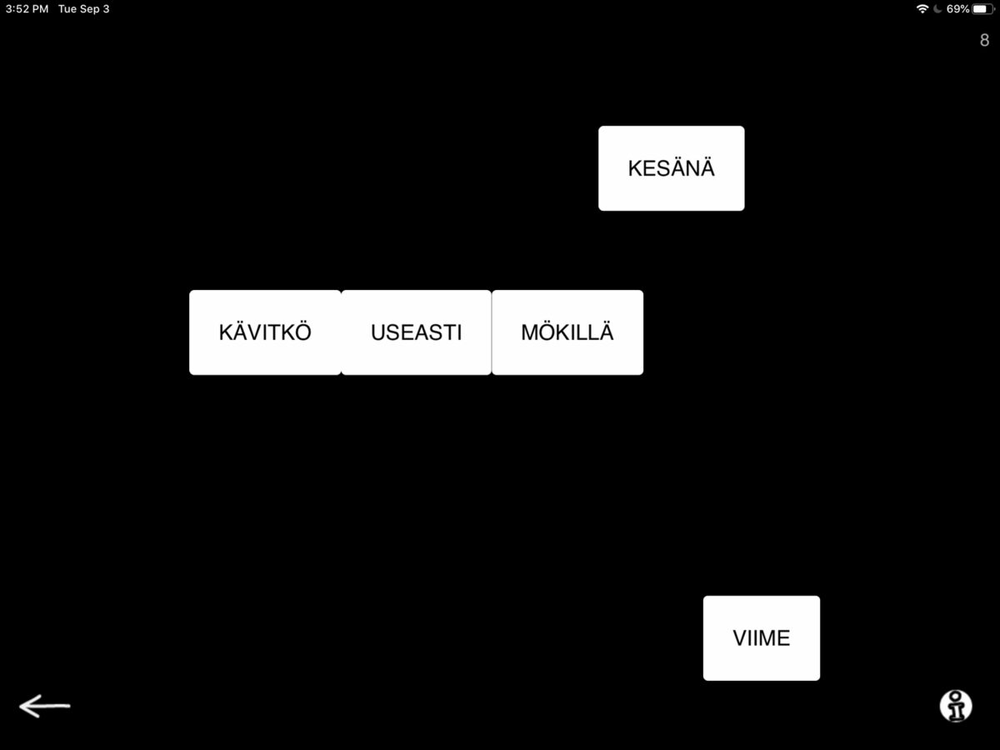
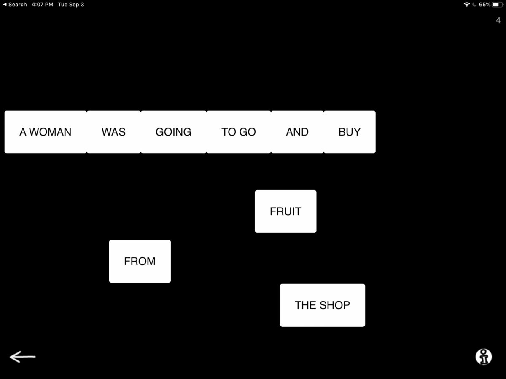
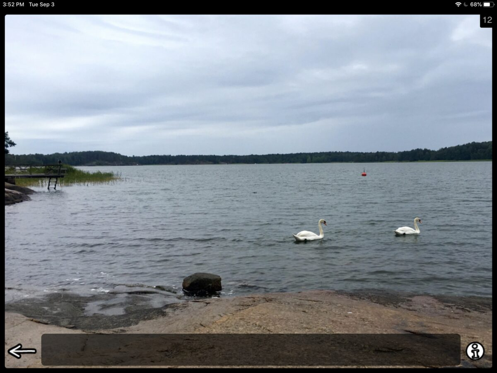

Hello all you lovely people!
We have been improving Sanapsis and Sanapsis Suomi side by side this summer and release 3.1 for both apps is here. For this one our focus has been on Production category, but as minds tend to wander you might find some additions scattered across other categories as well. I will give a quick overview of the heftier additions here and hope you enjoy exploring more in the app on your own.
First up, our Naming exercises. We get a lot of very nice feedback of our photos, so we decided to add some more. Altogether 227 images have been added to Naming (nouns) and Naming (actions) and I want to. As always the images that pop up on your screen here are randomized to keep things interesting. This means that the new images will be mixed in with the familiar ones and you will see them popping up as you go. Hope you like them!

Naming, nouns

Naming. actions
When using Organize a sentence you will come across new items as well. We added 100 new sentences! Evenly distributed across levels so remember to hit that info button and adjust levels.

Järjestä lause

Organize a sentence
Precise sentences gained 91 new tasks and its counterpart Descriptive sentences gained 70. Enjoy both!
Precise sentences

Descriptive sentences
As always, we appreciate feedback, suggestions for improvement and of course just hearing about you and how you are doing with Sanapsis. Let us know at sanapsis (a) puheklinikka.net!